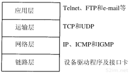
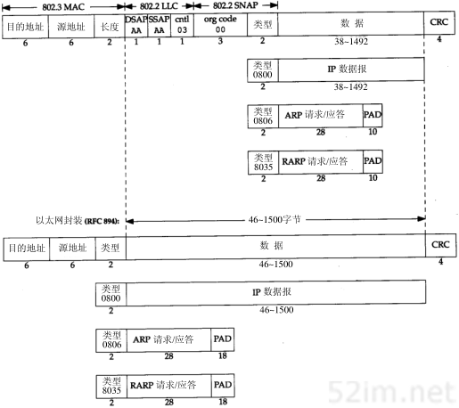
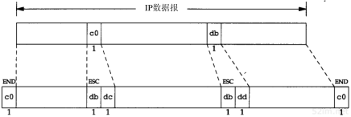
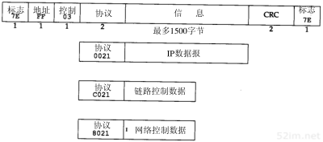
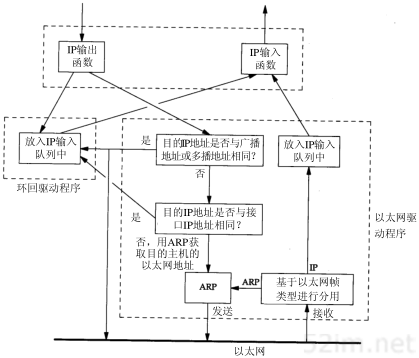

9.2.2. 数据链路层
这里再次引用TCP/IP协议族分层图

在TCP/IP协议族中，数据链路层主要有三个目的：
为IP模块发送和接收数据报
为ARP模块发送ARP请求和接收ARP应答
为RARP发送RARP请求和接收RARP应答
下面将套路以太网数据链路层协议，两个串行接口链路层协议(SLIP和PPP),以及大多数实现都包含的环回(loopback)驱动程序。
9.2.2.1. IEEE 802和以太网封装
IEEE 802.2/802.3（RFC 1042）和以太网的封装格式（RFC 894）

备注
以太网的封装格式为常见的封装格式
9.2.2.2. SLIP:串行线路IP
SLIP的全称是serial line ip，它是一种在串行线路上对IP数据报进行封装的简单形式，下面是SLIP定义的帧格式
IP数据报以一个END(0xC0)的特殊字符结束。同时为了防止数据报到来之前的线路噪声被当作数据报内容，大多数实现在数据报的开始处也传一个END字符
如果IP报文中某个字符为END,那么就要连续传送两个字节0xdb和0xdc来取代他，0xdb这个特殊字符称作SLIP的ESC字符，但是它的值与ASCII码的ESC字符(0x1b)不同
如果IP报文中某个字符为SLIP为SLIP的ESC字符，那么就要连续传送两个字节0xdb和0xdd来取代它
一下例子就是含有一个END字符和一个ESC字符的IP报文。在这个例子中，在串行线路上传输的总字节数是原IP报文长度再加4个字节。

9.2.2.3. PPP: 点对点协议
PPP包括以下三个部分
在串行链路上封装IP数据报的方法，PPP既支持数据为8位和无奇偶校验的异步模式，还支持面向比特的同步链接
建立、配置及测试数据链路的链路控制协议(LCP: link control protocol). 它允许通信双方进行协商,以确定不同的选项
针对不同网络层协议的网络控制协议(NCP: Network Control Protocol)体系。
PPP数据帧格式如下所示

每一帧都以标志字符0x7e开始和结束，接着是有个地址字节，值始终为0xff。然后是一个值为0x03的控制字节。接下来是协议字段，类似于以太网中类型字段的功能,然后是数据，最后是两个字节的crc
当遇到字符0x7e时，需连续传送两个字符：0x7d和0x5e，以实现标志字符的转义。
当遇到转义字符0x7d时，需连续传送两个字符：0x7d和0x5d，以实现转义字符的转义。
9.2.2.4. 环回接口
大多数产品都支持环回接口(loopback interface)，以允许运行在同一台主机上的客户程序和服务器程序将通过TCP/IP进行通信。A类端口号127就是为环回接口预留的。根据惯例，大多数系统把IP地址为 127.0.0.1分配给这个接口，并命令为localhost. 一个传给环回接口的IP数据报不能再任何网络上出现
环回接口处理IP数据报的简单过程

备注
1.传给环回地址（一般是127.0.0.1）的任何数据均作为IP输入。 2.传给广播地址或多播地址的数据报复制一份传给环回接口，然后送到以太网上。这是因为广播传送和多播传送的定义包含主机本身。 3.任何传给该主机IP地址的数据均送到环回接口。
9.2.2.5. MTU
以太网和802.3对数据帧的长度都有一个限制，其最大值分别为1500和1492字节。链路层的这个特性称作MTU,最大传输单元。 如果IP层有一个数据报要传而且数据的长度比链路层的MTU还大，那么IP层就需要进行 分片，把数据报分成若干片，这样每一片都小于MTU
当在同一个网络上的两台主机互相进行通信时，该网络的MTU是非常重要的。但是如果两台主机之间的通信要通过多个网络，那么每个网络的链路层就可能有不同的MTU。重要的不是两台主机所在网络的MTU的值，重要的是两台通信主机路径中的最小MTU。它被称作路径MTU。
两台主机之间的路径MTU不一定是个常数。它取决于当时所选择的路由。而选路不一定是对称的（从A到B的路由可能与从B到A的路由不同），因此路径MTU在两个方向上不一定是一致的。